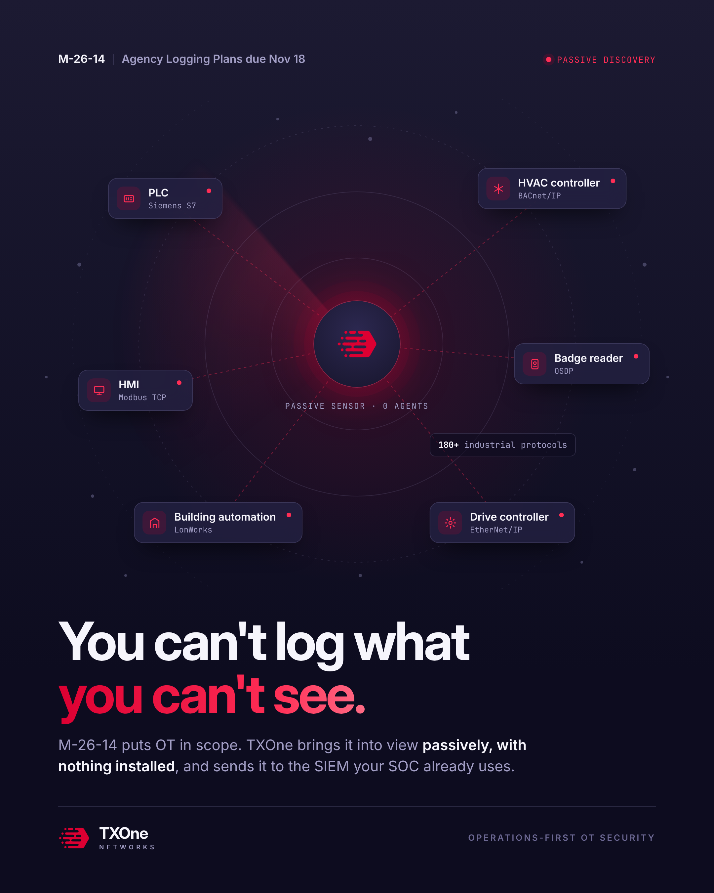

One message: you can't log OT you can't see. TXOne's passive sensor finds OT devices by the industrial protocols they speak, with nothing installed, so they can finally go into the M-26-14 logging plan.

Each card is a real kind of OT asset: PLC, HMI, HVAC controller, badge reader, building automation, drive controller, labelled with the industrial protocol it speaks. The crimson dot means TXOne has discovered it.
The faint dots around the edge are OT assets not yet seen. They're in scope under M-26-14, but invisible to IT tools that can't run agents or scan them safely.
The core idea in one line: you can't log what you can't see. Visibility comes first, then logging, then maturity.
M-26-14 puts OT in scope; TXOne brings it into view passively, with nothing installed, and sends it to the SIEM the SOC already uses.
Top left: Agency Logging Plans are due Nov 18. Top right: Passive discovery, the way TXOne finds OT without touching it.
The TXOne mark is the passive sensor. The rings and the sweep show it listening to network traffic; "0 agents" means nothing is installed on fragile devices.
Why the discovery works: TXOne understands 180+ OT protocols (BACnet, Modbus, S7, OSDP and more) that IT tools can't read.
TXOne logo and "Operations-first OT security": the promise that production and building systems keep running.